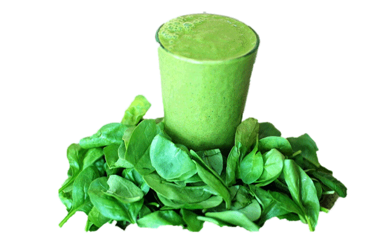
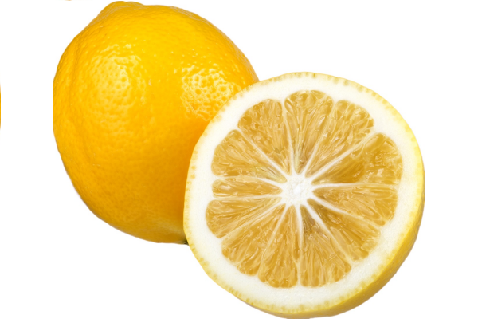

Our world-class smoothies are great at any time of the day and offer a tasty alternative to sugary and unhealthy snacks!
Watermelon Wonder
Watermelon is a delicious and refreshing fruit that's also good for you. It is high in vitamin C, vitamin A and many healthy plant compounds, but contains only 60 calories per smoothie. And because watermelon has a high water content, this smoothie is hydrating and helps you feel full.
Apple Delight
Apples are an awesome source of fibre and vitamin C. They also contain polyphenols, which can have numerous health benefits. Apples have been linked to a lower risk of heart disease because they contain soluble fibre that can help lower blood cholesterol.

Blueberry Surprise
One of our top sellers. Blueberries are so tasty that many people consider them their favourite fruit. In fact, because they are low in calories and incredibly good for you, blueberries are often labeled a superfood.

Lemon Luxury
Add zest to your day with our delicious Lemon Luxury smoothie. As a citrus fruit, lemons are high in vitamin C, which helps reduce your risk of cardiovascular disease and lowers blood pressure. Refreshing and energising – that's our Lemony Luxury smoothie!